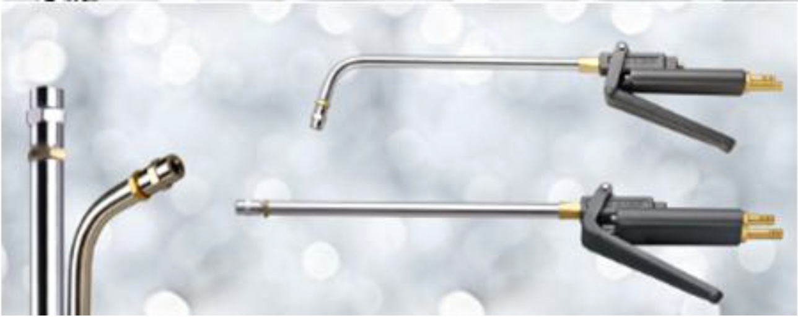
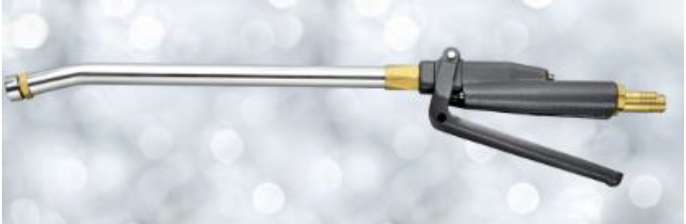

Sprayguns with customised spray nozzles for uniform, controlled die lubricant application — ensuring zero wastage and optimum spray as per the profile of every forging die.
Water-based die lubricants are most effective when applied by spraying. SPS offers three spraygun models — each designed for a different forging operation — along with expert training on correct spraying techniques, dilution ratios, nozzle selection, and spray timing.
Double-side spray ensures optimum lubrication and cooling of top and bottom die in press forging, or both sides of upsetter dies. Special customised nozzles are available for converting this double-side spray into triple-side spray — found extremely beneficial in upset forging.

Single-side spray through a bent pipe is the salient feature of this spraygun. The bent pipe design allows the spray nozzle to reach close to the die face, making it effective for dies with deep cavities and critical small profiles like lug gears that require spraying from near to the die.

This spraygun is used where blowing of scale using high-pressure air is necessary in addition to spraying die lubricant. It is ideal for heavy hammer forgings and for critical press forgings where scale has a tendency to fall into the die and cause rejections.
Share your press type, die geometry, and forging profile — our engineers will recommend the right spraygun and nozzle configuration.